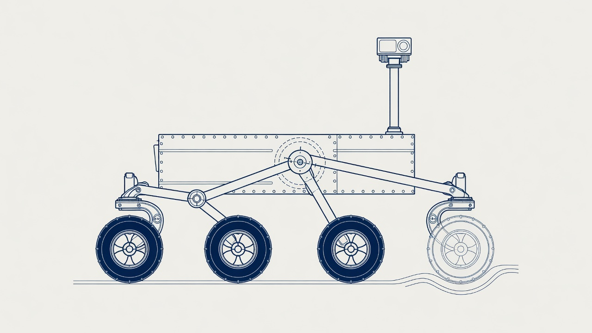
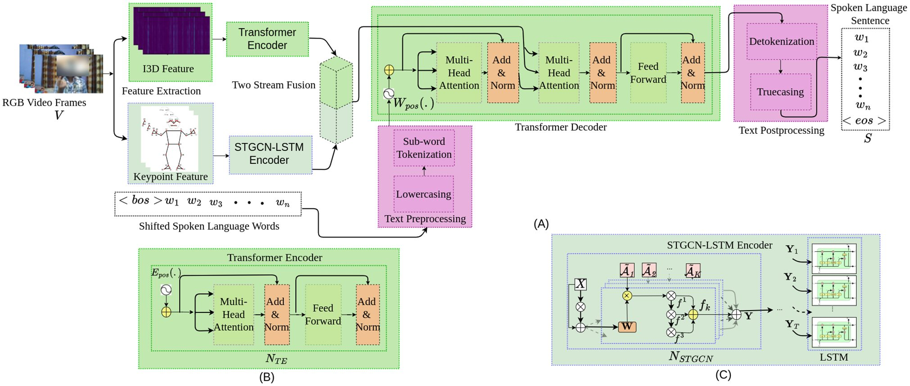
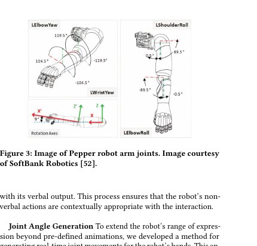
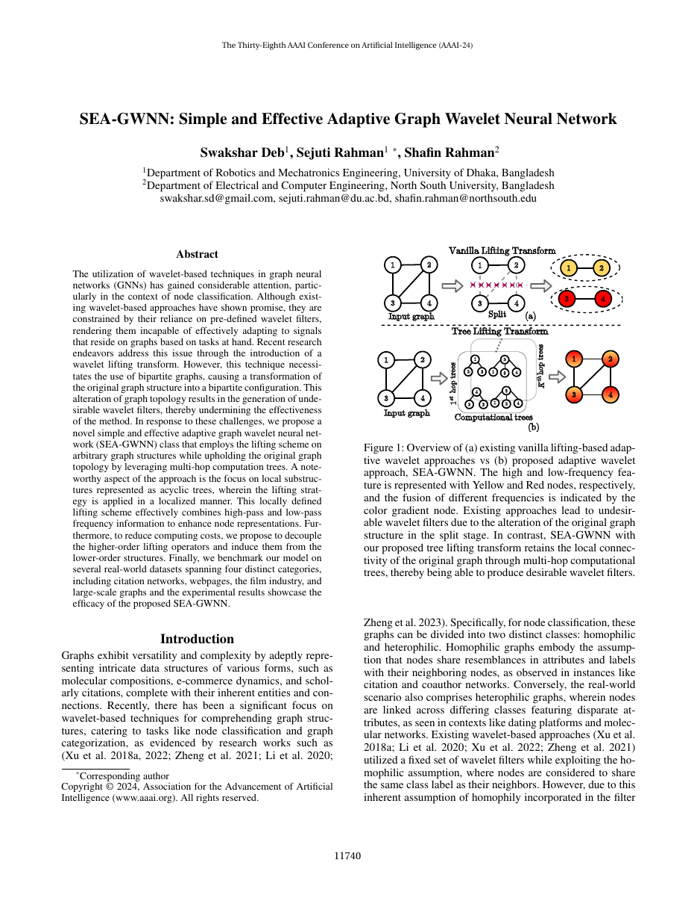
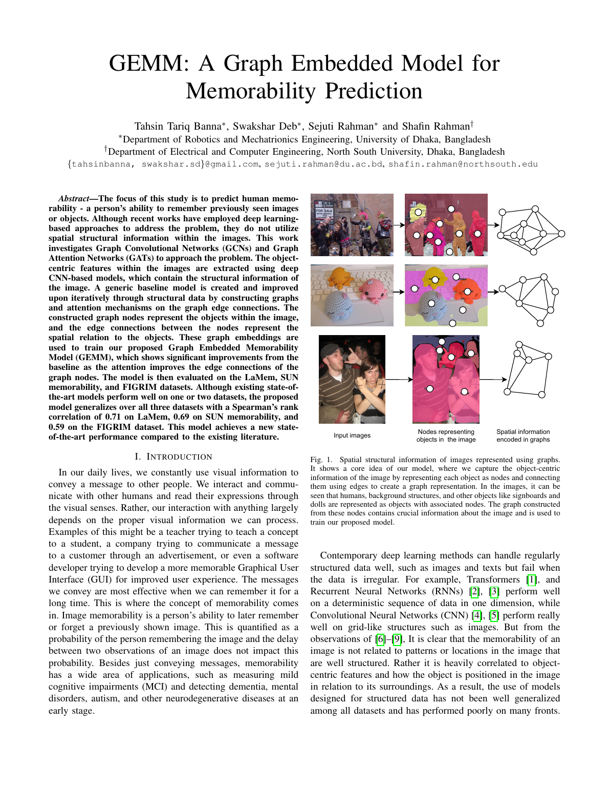
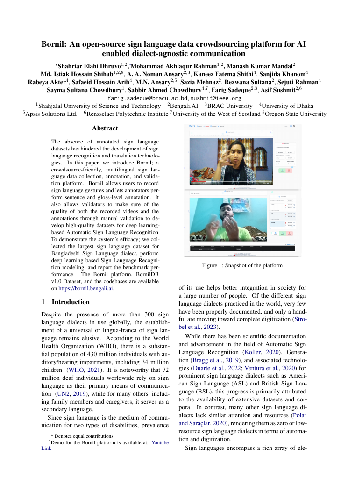
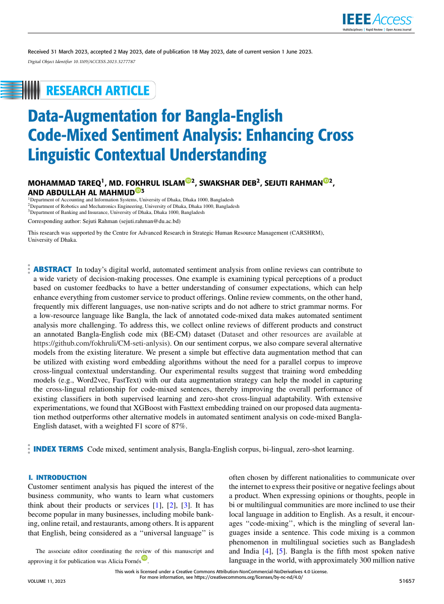
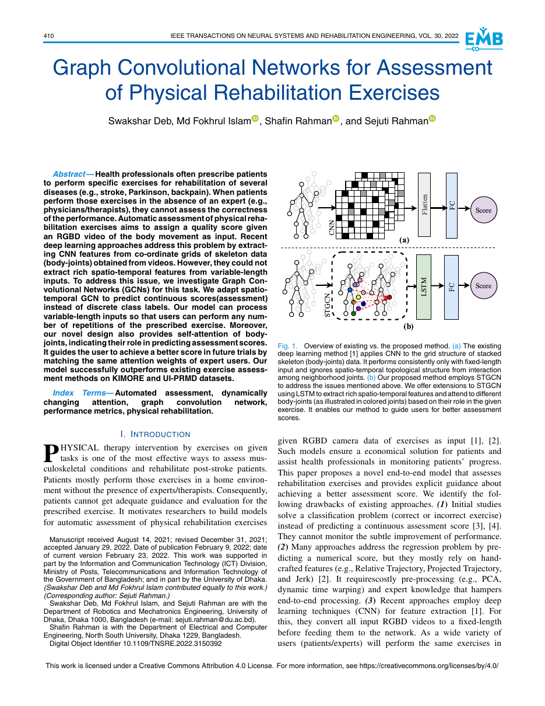
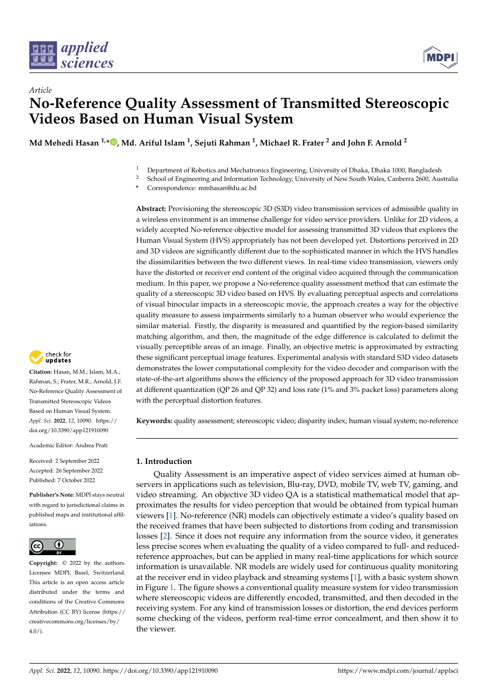
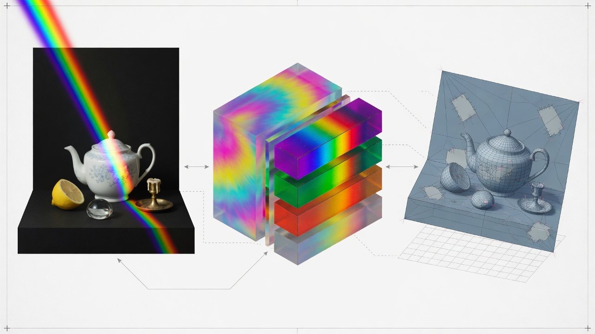

Publications
Selected papers from Dr. Sejuti Rahman's Google Scholar profile (835 citations, h-index 15, September 2026). Among the most-cited papers of the last ten years, 13 journal articles are in Q1 venues (Scimago; 26 journals, 7 books/conferences excluded). Duplicate Scholar entries and preprints of later journal versions are omitted.
2026

Escape Without a Recipe: Maneuver-Agnostic Mars Rover Recovery from Granular Entrapment
IROS 2026 Space Robotics Workshop, Pittsburgh, PA · accepted
Learning-based recovery when wheels sink in deformable terrain, without a fixed maneuver catalog.
2025

Neurocomputing
ReKon3D: Relation-knowledge aware multi-modal embedding and contrastive GAN for zero-shot 3D recognition
Neurocomputing 640, 2025 · cited by 1 Q1

RSC Advances
Deep-learning enabled rapid and low-cost detection of microplastics in consumer products following on-site extraction and image processing
RSC Advances 15(14), 10473–10483, 2025 · cited by 33
2024

SEA-GWNN: Simple and Effective Adaptive Graph Wavelet Neural Network
Proceedings of the AAAI Conference on Artificial Intelligence 38(10), 11740–11748, 2024 · cited by 12
IVC 2024
VAE-GAN3D: Leveraging image-based semantics for 3D zero-shot recognition
Image and Vision Computing 147, 105049, 2024 · cited by 11 Q1
PRL 2024
GA-GWNN: Generalized Adaptive Graph Wavelet Neural Network
Pattern Recognition Letters 177, 128–134, 2024 · cited by 4 Q1
2023


Bornil: An open-source sign language data crowdsourcing platform for AI enabled dialect-agnostic communication
arXiv:2308.15402, 2023 · cited by 2

Data-augmentation for Bangla-English Code-Mixed Sentiment Analysis: Enhancing Cross Linguistic Contextual Understanding
IEEE Access, 2023 · cited by 59 Q1
2022
TNSRE review
AI-driven Stroke Rehabilitation Systems and Assessment: A Systematic Review
IEEE Transactions on Neural Systems and Rehabilitation Engineering, 2022 · cited by 116 Q1

Graph convolutional networks for assessment of physical rehabilitation exercises
IEEE TNSRE 30, 410–419, 2022 · cited by 112 Q1
Cogn. Comput.
Automated detection approaches to autism spectrum disorder based on human activity analysis: A review
Cognitive Computation 14(5), 1773–1800, 2022 · cited by 35 Q1
SNCS 2022
COVIDXception-Net: A Bayesian optimization-based deep learning approach to diagnose COVID-19 from X-Ray images
SN Computer Science 3(2), 115, 2022 · cited by 18

No-Reference Quality Assessment of Transmitted Stereoscopic Videos Based on Human Visual System
Applied Sciences 12(19), 10090, 2022 · cited by 8
2021
Cogn. Comput.
Deep learning–driven automated detection of Covid-19 from radiography images: A comparative analysis
Cognitive Computation, 2021 · cited by 57 Q1
PRL 2021
Bangla sign alphabet recognition with zero-shot and transfer learning
Pattern Recognition Letters 150, 84–93, 2021 · cited by 56 Q1
SNCS 2021
Automated covid-19 detection from chest x-ray images: a high-resolution network (HRNet) approach
SN Computer Science 2(4), 294, 2021 · cited by 45
Design and development of a humanoid robot for sign language interpretation
SN Computer Science 2, 1–17, 2021 · cited by 27
ICPR 2021
Classifying Eye-Tracking Data Using Saliency Maps
ICPR 2020 (proc. 2021), 9288–9295 · cited by 20
2018
Anim. Prod. Sci.
Preliminary estimation of fat depth in the lamb short loin using a hyperspectral camera
Animal Production Science 58, 1488–1496, 2018 · cited by 20 Q1
2017 – 2011 · computational imaging

Estimating Reflectance Parameters, Light Direction, and Shape From a Single Multispectral Image
IEEE Transactions on Computational Imaging 3(4), 837–852, 2017 · cited by 4 Q1
ACCV 2014
Color photometric stereo using a rainbow light for non-Lambertian multicolored surfaces
ACCV 2014 · cited by 12
CVIU 2013
An optimisation approach to the recovery of reflection parameters from a single hyperspectral image
Computer Vision and Image Understanding 117(12), 1672–1688, 2013 · cited by 8 Q1
PhD thesis
Estimating reflectance, illumination, and shape from a single view
PhD thesis, Australian National University, 2014
A complete listing, including book chapters and older graphics papers, is on Google Scholar and ResearchGate.